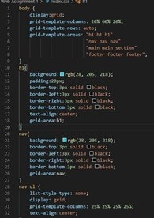
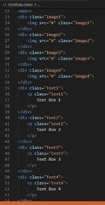
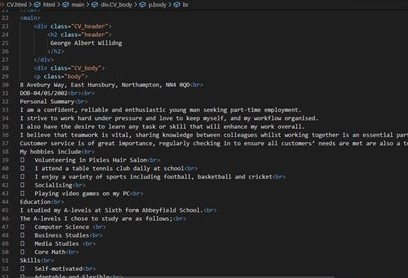

index_html
For this, I decided to go with a simple website layout that has a header, navigation, main page, a section on the right, and a footer. I have done a little introduction of what is going to be on my page since people who are new to the website would want to know what it is about. I have made space on the right side of the screen so that i can fill it with a picture of me so that people can see what i look like when view this page. I've named the page my website because the people who read the intro would know who I am.
index_css
I made the website blue as it is my favourite colour and since its a website about me, I thought it was suitable. I have made my border of the website black so my structure of the website is clearly visable. I have made the structure of the website with display grid and the inside of the navigation bar with display grid as it helps create simple design, makes it easily viewable and doesn't make the layout too complicated

portfolio_html
I have not put the images or text into this page as i would need term twos work and I have done that yet. I have inputted some standard text and colour into it however so that you can see where the work would go.

portfolio_css
I made a grid template for the main section of the website. I have not added anything else as I didn't want any unneccessary information.
contact_html
I made this very simple. I made room for the form when I make it and I have my contact details clearly shown on the side of the screen. I have not done a contact.css screenshot as there was wasn't any change done to the css.
cv_html
I have created the heading for the CV which is my name which shows who it is about. I have then added my CV to the page while adding breaks between each end of the line so that I have more space for my extra information. This also helps with organising where specific parts of the CV is on the page.

cv_css
I have added another simple grid layout for this part of the website. I made it so that I have a header inputted which would be my name. The second part of the grid layout would be the body. This section holds all of the information about me in the CV